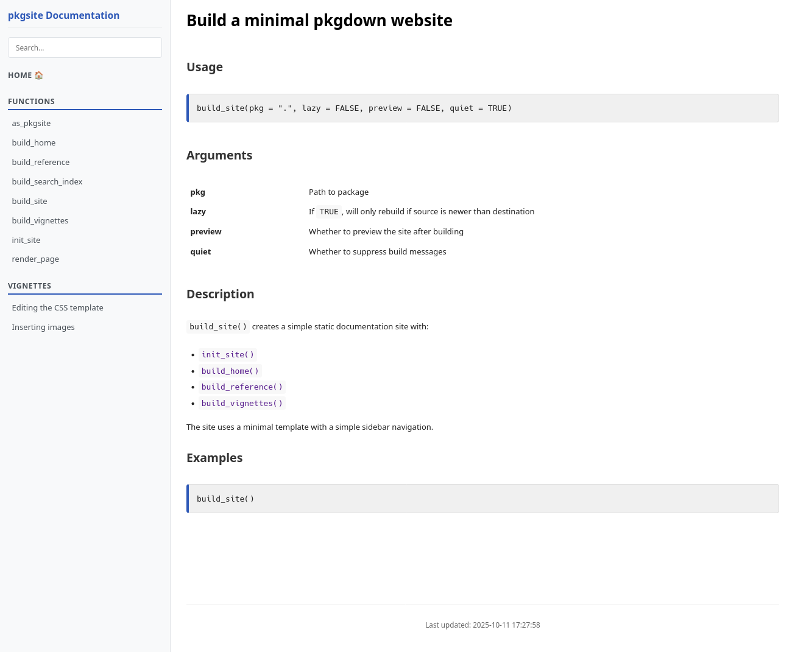
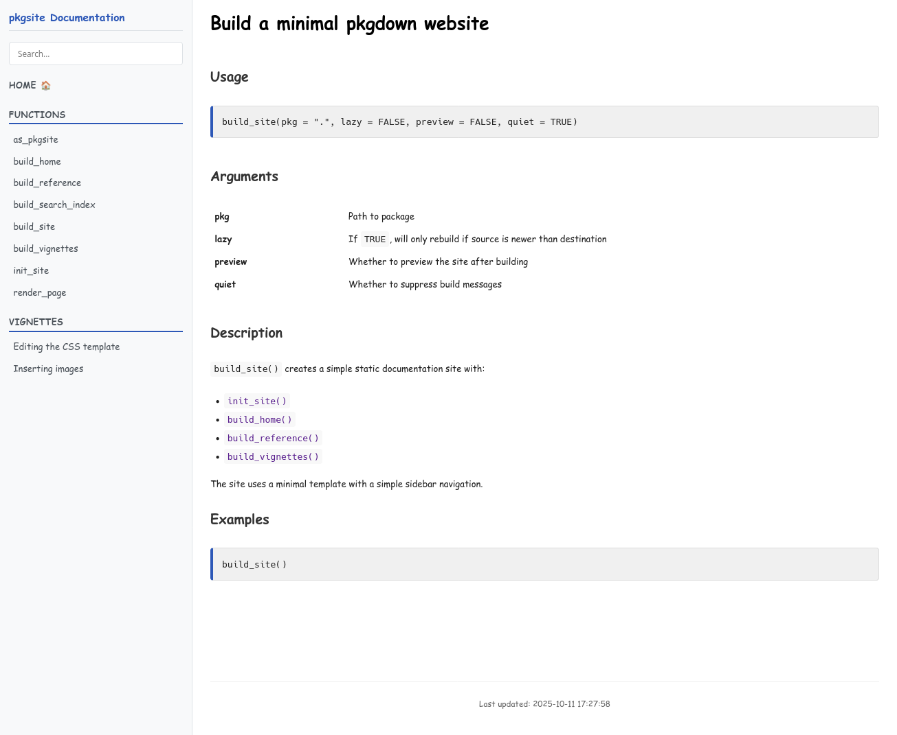

Editing the CSS template
Being this a package to build a minimal site, the CSS is very simple and it consists in two files: content.css and menu.css
You can alter the CSS generated after running
build_site(). If you open
./docs/content.cssyou can apply any valid CSS, for example
by changing this
body {
margin: 8px;
padding: 0px;
font-size: small;
font-family: "Lucida Grande", "Lucida Sans Unicode", Arial, Verdana, Helvetica, sans-serif;
background-color: #fff;
color: #222;
line-height: 1.5;
}into this
body {
margin: 8px;
padding: 0px;
font-size: small;
font-family: "Comic Sans MS", Arial, Verdana, Helvetica, sans-serif;
background-color: #fff;
color: #222;
line-height: 1.5;
}The change will be reflected in the site after refreshing the browser.
Before

After
